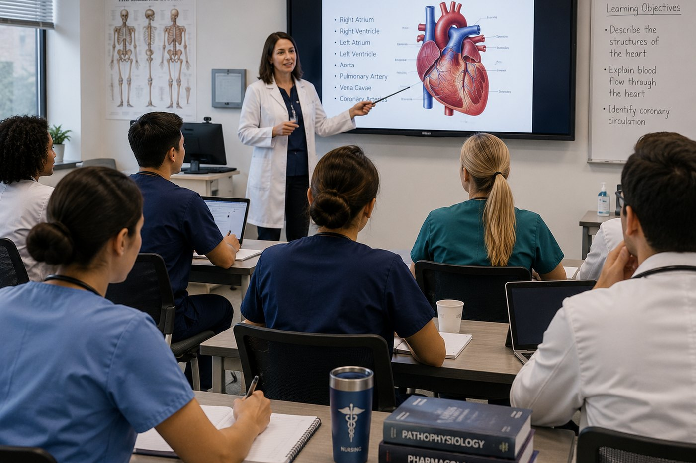
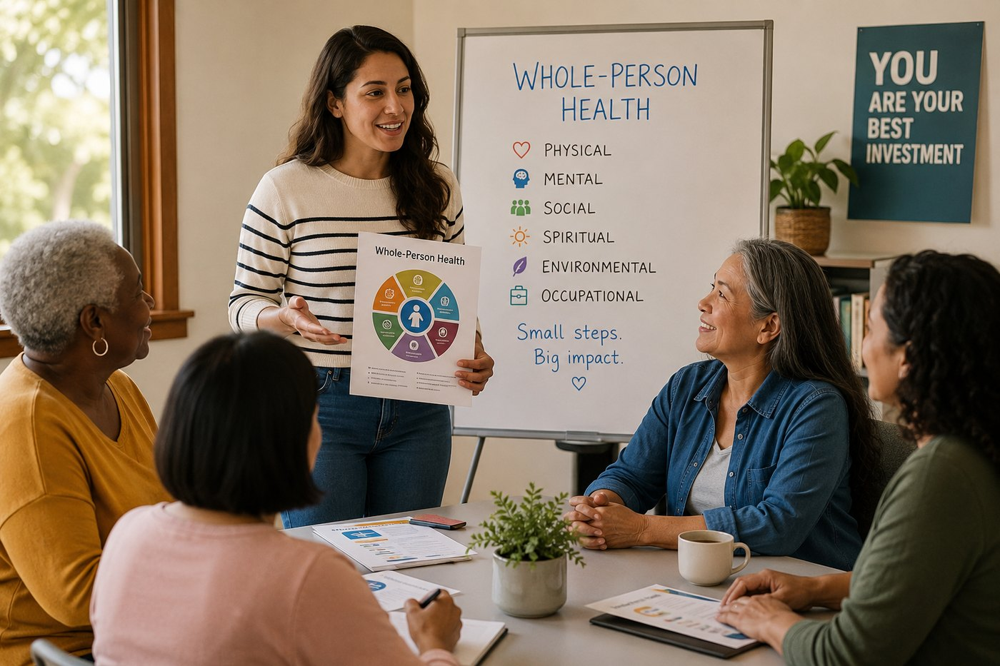
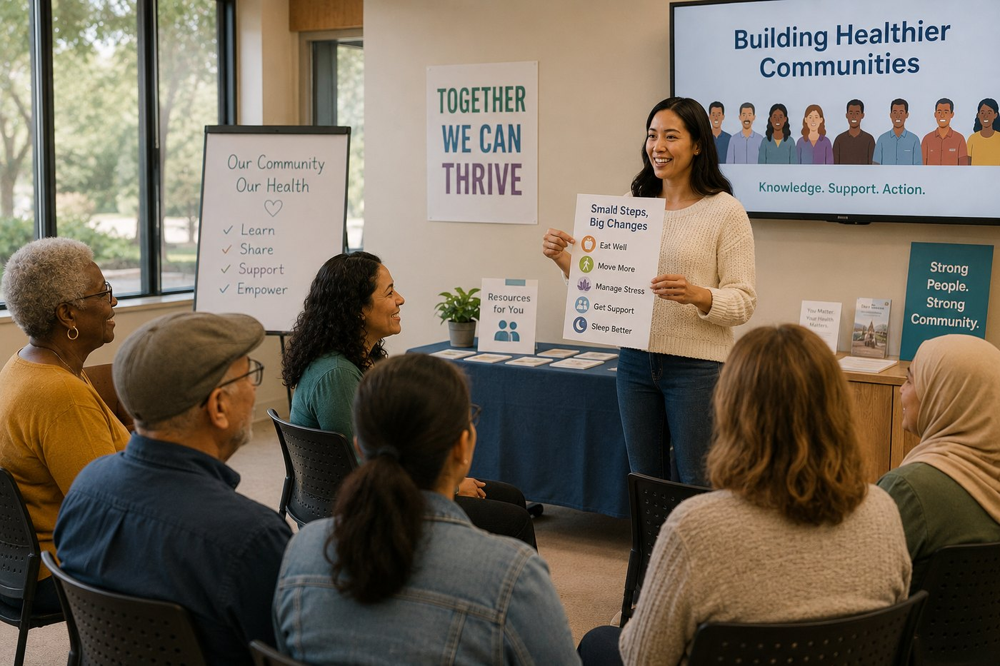

Healthcare Education
Resources that help professionals, students, and communities better understand health, prevention, clinical practice, and the broader factors that shape health outcomes.
Building on prior healthcare education experience to support accessible, evidence-informed initiatives.
The Aesculapius Foundation has a history of developing and supporting independent healthcare education programs. After a period of dormancy, the Foundation is reactivating its mission with a renewed focus on healthcare education, whole-person health literacy, professional development, and community empowerment.
The Foundation’s prior work included independent medical education and CME-related programming developed in collaboration with accredited providers, faculty experts, and healthcare-sector partners. Past initiatives included needs assessments, educational objectives, live programs, webinar-based education, enduring educational activities, faculty coordination, audience recruitment, and program evaluation.
Today, the Foundation is building on that experience to support accessible, evidence-informed educational initiatives for healthcare professionals, students, caregivers, and communities.

Resources that help professionals, students, and communities better understand health, prevention, clinical practice, and the broader factors that shape health outcomes.

Education about evidence-informed approaches to health and the physical, emotional, mental, social, environmental, and lifestyle factors that influence wellness.
Learning opportunities that strengthen clinical knowledge, ethical awareness, leadership capacity, and communication skills.

Community-centered education that helps people understand health information, ask informed questions, and engage more confidently with healthcare systems.
The Foundation’s programs are designed for educational purposes and should preserve appropriate independence, balance, and scientific integrity.
Programs should preserve independence, balance, and scientific integrity.
Content should be grounded in credible evidence and responsible communication.
Healthcare knowledge should be understandable, practical, and useful.
The Foundation seeks to work with professionals, educators, community organizations, accredited providers, and mission-aligned partners.
The Foundation welcomes conversations with healthcare professionals, educators, community organizations, accredited education providers, and mission-aligned partners.